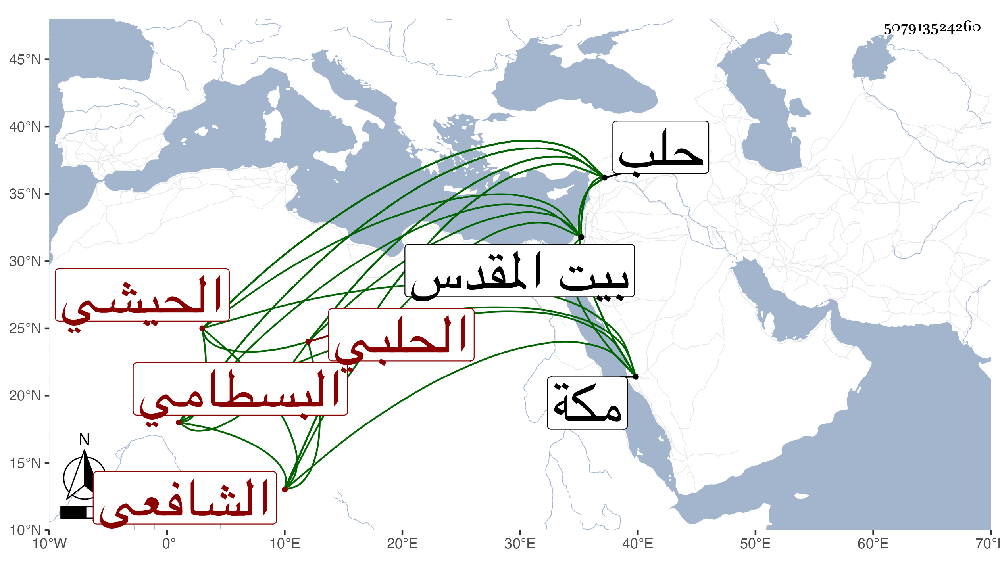

0902Sakhawi.DawLamic.ITO20230111-ara1.EIS1600.507913524260
Biography ID: 507913524260
208
أبو بكر بن محمد بن أبي بكر بن نصر بن عمر الشرف الحيشي الأصل الحلبي الشافعي البسطامي الماضي أبوه والآتي جده ويعرف بابن الحيشي . ولد في مستهل جمادى الأولى سنة ثمان وأربعين وثمانمائة بحلب ونشأ بها فلازم والده في التسلك وقرأ وسمع على أبي ذر بن البرهان الحافظ وتدرب به في كثير من المبهمات والغريب والرجال بل وتفقه به والشمس محمد البابي إمام الجامع الكبير بحلب وأبي عبد الله بن القيم وإبراهيم الضعيف وكذا على العلاء بن السيد عفيف الدين حين ورد عليهم في آخرين بل ذكر لي أن شيخنا والعلم البلقيني والزين عبد الرحمن بن داود أجازوا له في بعض الاستدعاءات في آخرين ممن أخذ عنهم الفقه والحديث وخلف والده في المشيخة بحلب وصارت له وجاهة وزار بيت المقدس ولقيني بمكة في سنتي ست وثمانين والتي بعدها فلازمني حتى حمل عني أشياء من مروياتي ومصنفاتي وكتب بخطه منها جملة واغتبط بذلك وكتبت له إجازة أشرت لمقاصدها في الكبير ونعم الرجل أدبا وفهما وسمتا وتواضعا واشتغالا بنفسه وإقبالا على الخير وتقنعا وعفة وربما وردت على مطالعاته من بلده .
